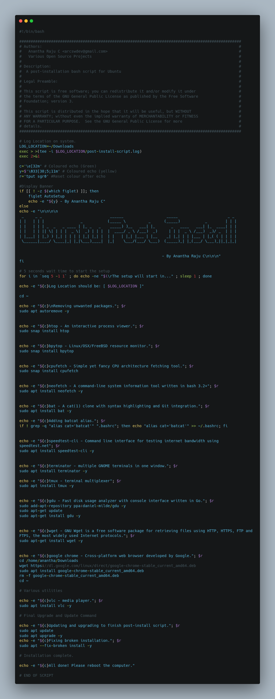

Automating Your Ubuntu Setup: A Post-Installation Shell Script
Streamline your Ubuntu setup process with a post-installation shell script designed to automate the installation of essential software and configurations. This script simplifies the setup of a new Ubuntu system, saving you time and effort by handling common post-install tasks automatically.
Understanding Shell Scripts
A shell script is a computer program designed to be run by a Unix shell, serving as a command-line interpreter. By leveraging shell scripting, you can automate repetitive tasks and streamline your workflow on Ubuntu.
Minimum Software Requirements
To utilize this post-installation shell script, you need a system running Ubuntu, a popular Linux distribution known for its user-friendly interface and robustness.
Sample Project
Explore the Ubuntu Post Install Scripts repository on GitHub to access the sample script and customize it according to your preferences.
Basic Usage
-
Open a Terminal Window: Launch a terminal window on Ubuntu by pressing either of the following key combinations on your keyboard:
- Ctrl + Alt + T
- Ctrl + Shift + T
-
Set Script Permissions: Update the permissions of the script to make it executable using the
chmodcommand.sudo chmod +x ubuntu-post-install.sh
-
Run the script with the
bashcommand.sudo bash ubuntu-post-install.sh
Customization
While the provided script includes a set of preferential packages and configurations, you can customize it to suit your specific requirements. Feel free to update the script with your preferred software packages and system configurations by modifying the script available on the GitHub repository.

Conclusion
By leveraging the Ubuntu Post Install Script, you can expedite the setup process of your Ubuntu system, ensuring that it is configured according to your preferences and equipped with essential software packages. Embrace automation to enhance your productivity and make the most out of your Ubuntu experience.